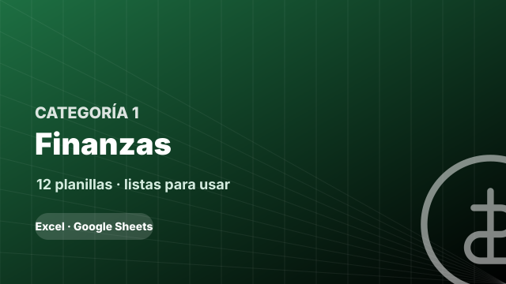
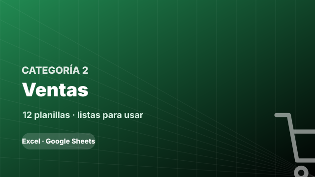
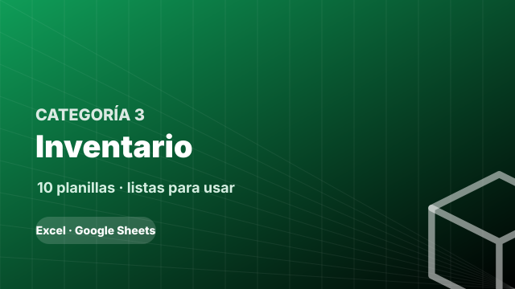
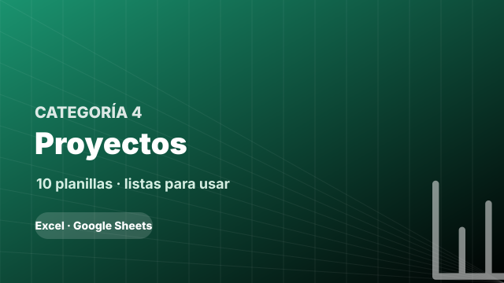

X
Flujo de Caja Mensual8 columnas
Fecha · Concepto · Categoría · Ingreso · Egreso · Saldo Acumulado…
⚙️ Saldo acumulado calculado en tiempo real; gráfico de barras ingresos vs egresos por mes; semáforo de saldo (verde/amarillo/rojo según umbral configura
X
Control de Cuentas por Cobrar8 columnas
Cliente · Factura N° · Fecha Emisión · Fecha Vencimiento · Monto · Estado (Pendiente/Parcial/Pagado)…
⚙️ Días vencidos = HOY()−Fecha Vencimiento; estado "VENCIDO" automático con formato condicional rojo; total pendiente y total cobrado con SUMAR.SI; lista
X
Control de Cuentas por Pagar7 columnas
Proveedor · Concepto · Fecha Vencimiento · Monto · Estado · Días Para Vencer…
⚙️ Días para vencer calculados en tiempo real; prioridad "URGENTE" si vence en ≤7 días; total de compromisos del mes; clasificación por proveedor con tab
X
Estado de Resultados Mensual15 columnas
Concepto · Ene · Feb · Mar · Abr · May…
⚙️ Ventas Netas − Costo de Ventas = Utilidad Bruta; Utilidad Bruta − Gastos Operativos = EBITDA; márgenes calculados automáticamente; gráfico de rentabil
X
Presupuesto Anual vs Real6 columnas
Categoría · Presupuestado · Real · Variación $ · Variación % · Semáforo
⚙️ Variación = Real − Presupuestado; semáforo automático (verde <5% desvío, amarillo 5–15%, rojo >15%); % de ejecución acumulado; proyección de cierre de
X
Control de Gastos por Categoría7 columnas
Fecha · Descripción · Categoría · Subcategoría · Monto · Forma de Pago…
⚙️ Tabla dinámica automática por categoría y mes; gráfico circular de distribución; top 5 categorías de mayor gasto; comparativo mes actual vs mes anteri
X
Conciliación Bancaria6 columnas
Fecha · Descripción · Monto Libro · Monto Banco · Diferencia · Estado (Conciliado/Pendiente)
⚙️ Diferencia = Libro − Banco; suma de partidas en tránsito; balance ajustado final; marcado automático de partidas conciliadas con checkbox; alerta si d
X
Control de Impuestos8 columnas
Período · Impuesto · Base Gravable · Alícuota % · Monto a Pagar · Fecha Límite…
⚙️ Monto = Base × Alícuota; días para vencimiento en tiempo real; alerta de vencimiento próximo (<10 días) en rojo; historial de pagos con totales anuale
X
Punto de Equilibrio7 columnas
Producto/Servicio · Precio de Venta · Costo Variable Unit. · Margen de Contribución · Costos Fijos · PE Unidades…
⚙️ Margen = Precio − Costo Variable; PE Unidades = Costos Fijos ÷ Margen; PE $ = PE Unidades × Precio; gráfico de cruce costo total e ingreso; simulador
X
Proyección de Ventas 12 Meses6 columnas
Mes · Ventas Reales (histórico) · Tasa Crecimiento % · Proyección Base · Escenario Optimista · Escenario Pesimista
⚙️ Proyección = Mes anterior × (1 + Tasa); optimista = Base × 1,20; pesimista = Base × 0,80; gráfico de área con banda de confianza; acumulado proyectado
X
ROI de Inversiones del Negocio7 columnas
Inversión · Descripción · Fecha · Monto Invertido · Retorno Obtenido · ROI %…
⚙️ ROI % = (Retorno − Inversión) ÷ Inversión × 100; período de recupero = Inversión ÷ (Retorno ÷ meses); ranking automático por ROI con JERARQUIA.EQV; gr
X
Dashboard Financiero Ejecutivo5 columnas
Fecha · Concepto · Categoría · Monto · Estado (Pendiente/Pagado)
⚙️ Consolida automáticamente datos de Planillas 01–11 con referencias cruzadas; semáforos en todos los KPIs; gráficos sparkline de tendencia de 6 meses;

X
Registro Diario de Ventas10 columnas
Fecha · N° Venta · Cliente · Producto/Servicio · Cantidad · Precio Unit.…
⚙️ Total = Cantidad × Precio × (1 − Descuento); suma diaria y mensual automática; ticket promedio calculado; ranking de productos más vendidos; gráfico d
X
Pipeline de Ventas (CRM Básico)10 columnas
Prospecto · Contacto · Fuente · Producto · Valor Estimado · Etapa (Lead/Calificado/Propuesta/Negociación/Ganado/Perdido)…
⚙️ Valor Ponderado = Valor × Probabilidad; total del pipeline por etapa; tasa de conversión entre etapas con CONTAR.SI; alerta de prospectos sin contacto
X
Metas y Cuotas de Ventas9 columnas
Vendedor · Meta Mensual · Semana 1 · Semana 2 · Semana 3 · Semana 4…
⚙️ % Cumplimiento = Real ÷ Meta; ranking automático con JERARQUIA.EQV; semáforo de rendimiento; proyección de cierre mensual por ritmo semanal; gráfico d
X
Seguimiento y Retención de Clientes7 columnas
Cliente · Clasificación (A/B/C) · Última Compra · Días Sin Comprar · Total Comprado 12M · Ticket Promedio…
⚙️ Días sin comprar = HOY() − Última Compra; clasificación ABC automática por volumen (A=top 20%); estado automático (>90 días = En Riesgo, >180 = Perdid
X
Análisis de Productos y Servicios8 columnas
Producto · Unidades Vendidas · Ingresos · % del Total · Costo · Margen $…
⚙️ % del total con referencia absoluta; ranking por ingreso y por margen; Pareto 80/20 automático (resalta top 20% de productos que generan 80% del ingre
X
Control de Comisiones8 columnas
Vendedor · Ventas del Período · Base de Comisión · % Comisión · Comisión Calculada · Bonus por Meta…
⚙️ Comisión = Ventas × %; bonus si supera meta (umbral configurable); nómina total de comisiones; histórico anual acumulado por vendedor.
X
Generador de Propuesta Comercial7 columnas
Ítem · Descripción · Cantidad · Precio Unit. · Descuento % · Subtotal…
⚙️ Subtotal = Cantidad × Precio × (1 − Descuento); total general; impuesto/IVA configurable; fecha de validez con días restantes automáticos; pie de pági
X
Control de Descuentos y Promociones8 columnas
Período · Tipo de Promoción · Producto · Precio Normal · Precio Promo · Descuento %…
⚙️ Descuento % = (Normal − Promo) ÷ Normal; impacto real en margen vs precio normal; comparativo de volumen en períodos con y sin promoción; ROI de la pr
X
Análisis de Canales de Venta6 columnas
Canal (Online/Presencial/WhatsApp/Referido/Redes) · Ventas $ · % del Total · Costo de Adquisición · Ticket Promedio · ROI del Canal
⚙️ % distribución automático; ROI = (Ventas − Costo) ÷ Costo; gráfico de torta por canal; evolución mensual por canal; canal más rentable resaltado.
X
Registro de Cotizaciones8 columnas
N° Cotización · Cliente · Fecha · Validez (días) · Monto · Estado (Enviada/Aceptada/Rechazada/Vencida)…
⚙️ Estado "VENCIDA" automático si HOY() > Fecha + Validez; tasa de conversión = Aceptadas ÷ Enviadas; análisis de motivos de rechazo con CONTAR.SI; valor
X
Previsión de Ingresos Recurrentes17 columnas
Cliente/Fuente · Tipo (Recurrente/Único) · Frecuencia · Monto Unit. · Ene · Feb…
⚙️ Ingresos recurrentes proyectados automáticamente según frecuencia configurada; total anual; % de ingresos recurrentes vs totales; gráfico de flujo de
X
Clientes VIP y Programa de Fidelización8 columnas
Cliente VIP · Desde (fecha) · Total Comprado · N° Compras · Ticket Promedio · Último Contacto…
⚙️ Segmentación VIP automática si compra acumulada > umbral configurable; días desde último contacto; recordatorio de próxima acción resaltado si fecha p

X
Control de Stock en Tiempo Real10 columnas
Código · Producto · Unidad · Stock Inicial · Entradas · Salidas…
⚙️ Stock Actual = Inicial + Entradas − Salidas; estado "REPONER" automático si Stock ≤ Mínimo (rojo); Valor = Stock × Costo Promedio; gráfico de rotación
X
Registro de Entradas (Compras)9 columnas
Fecha · Proveedor · Código · Producto · Cantidad · Costo Unit.…
⚙️ Total = Cantidad × Costo; actualiza stock automáticamente via referencia a Planilla 25; costo promedio ponderado recalculado con cada entrada; total d
X
Registro de Salidas (Ventas y Consumo)8 columnas
Fecha · Destino (Venta/Uso Interno/Devolución al Proveedor) · Código · Producto · Cantidad · Precio Venta…
⚙️ Margen = Precio − Costo; descuento automático del stock; CMV acumulado del período; rentabilidad por producto vendido; alerta si stock resultante < mí
X
Valorización de Inventario6 columnas
Producto · Stock Actual · Costo Promedio · Valor de Inventario · % del Total · Clasificación ABC
⚙️ Valor = Stock × Costo; clasificación ABC automática (A = 80% del valor total, B = 15%, C = 5%); total general valuado; antigüedad de stock (días desde
X
Control de Proveedores9 columnas
Proveedor · Producto Principal · Contacto · Teléfono · Plazo de Entrega (días) · Condición de Pago…
⚙️ Ranking por calificación; días desde última compra calculados; alerta de proveedores no consultados >60 días; comparativo de condiciones de pago y pla
X
Análisis de Rotación de Inventario6 columnas
Producto · CMV del Período · Inventario Promedio · Rotación (veces/año) · Días de Inventario · Semáforo
⚙️ Rotación = CMV ÷ Inventario Promedio; Días = 365 ÷ Rotación; semáforo (verde <30 días, amarillo 30–60, rojo >60); productos de baja rotación marcados
X
Control de Devoluciones8 columnas
Fecha · Tipo (Cliente/Proveedor) · Nombre · Producto · Cantidad · Motivo…
⚙️ Conteo de devoluciones por motivo; % de devolución sobre ventas/compras; re-ingreso automático al stock si Acción = "Cambio"; costo de las devolucione
X
Órdenes de Compra a Proveedores9 columnas
Proveedor · Producto · Stock Actual · Stock Mínimo · Punto de Reorden · Cantidad Sugerida…
⚙️ Cantidad sugerida = (Stock Mínimo × 2) − Stock Actual; lista automática de productos a reponer; total de pedido por proveedor; seguimiento de pedidos
X
Control de Mermas y Pérdidas8 columnas
Fecha · Producto · Cantidad · Costo Unit. · Pérdida Total · Causa (Vencimiento/Rotura/Robo/Error)…
⚙️ Pérdida Total = Cantidad × Costo; total de pérdidas por causa con SUMAR.SI; % de merma sobre inventario total; gráfico de distribución de causas; pérd
X
Inventario Físico (Conteo Periódico)8 columnas
Código · Producto · Stock Sistema · Conteo Físico 1 · Conteo Físico 2 · Promedio Conteo…
⚙️ Diferencia = Sistema − Promedio Físico; resaltado automático de diferencias ≠ 0; costo de las diferencias; reporte de discrepancias ordenado por impac

X
Plan de Proyecto con Gantt Simplificado8 columnas
Tarea · Responsable · Fecha Inicio · Fecha Fin · Duración (días) · % Avance…
⚙️ Duración = Fin − Inicio; Gantt visual generado con formato condicional por semana (barras de colores); % completado del proyecto = promedio ponderado
X
Tablero de Tareas del Equipo9 columnas
Tarea · Proyecto · Responsable · Prioridad (Alta/Media/Baja) · Fecha Límite · Estado (Pendiente/En Curso/Completada/Bloqueada)…
⚙️ Tareas vencidas en rojo automáticamente; % de tareas completadas por proyecto; eficiencia = Estimado ÷ Real; carga de trabajo por persona (suma de hor
X
Presupuesto y Control de Costos del Proyecto8 columnas
Rubro · Descripción · Presupuestado · Comprometido · Ejecutado · Saldo Disponible…
⚙️ Saldo = Presupuestado − Ejecutado; semáforo de alerta de sobrejecución (rojo si > 100%); total por rubro; variación comprometido vs ejecutado; proyecc
X
Seguimiento de Hitos y Entregables9 columnas
Hito · Entregable · Fecha Planeada · Fecha Real · Desvío (días) · Responsable…
⚙️ Desvío = Real − Planeada; semáforo (verde si ≤0 días, rojo si >0); % de hitos completados sobre total; impacto acumulado en plazo del proyecto.
X
Matriz de Riesgos8 columnas
Riesgo · Probabilidad (1–5) · Impacto (1–5) · Severidad · Categoría · Plan de Mitigación…
⚙️ Severidad = Probabilidad × Impacto; ranking por severidad; matriz visual 5×5 con formato condicional (verde <8, amarillo 8–15, rojo >15); riesgos crít
X
Control de Recursos y Costos de Personal8 columnas
Recurso · Tipo (Persona/Equipo/Material) · Costo/Hora o Unidad · Cantidad Planeada · Cantidad Real · Costo Planeado…
⚙️ Costos = Cantidad × Costo; desvío = Real − Planeado; utilización % = Real ÷ Planeado; total de recursos por tipo; alerta de desvío >20%.
X
Registro de Lecciones Aprendidas8 columnas
Fase del Proyecto · Situación Ocurrida · Causa Raíz · Impacto · Acción Correctiva · Responsable…
⚙️ Filtro por categoría y fase; conteo de lecciones por categoría; buscador con BUSCARV por palabra clave; exportable como base de conocimiento del equip
X
Dashboard de Portafolio de Proyectos5 columnas
Fecha · Concepto · Categoría · Monto · Estado (Pendiente/Pagado)
⚙️ Vista consolidada de todos los proyectos activos con referencias automáticas; semáforo calculado (verde si avance ≥% del tiempo transcurrido, rojo si
X
Control de Cambios y Solicitudes8 columnas
N° · Descripción del Cambio · Solicitado Por · Fecha · Impacto en Plazo (+días) · Impacto en Costo ($)…
⚙️ Total de impacto acumulado en plazo y costo; cambios pendientes de resolución en amarillo; bitácora de aprobaciones; cambios que superan umbral de imp
X
Cierre y Evaluación de Proyecto6 columnas
Indicador · Meta Original · Resultado Final · Desvío · % Cumplimiento · Comentario
⚙️ Desvío = Real − Meta; % cumplimiento = Real ÷ Meta; semáforo de cumplimiento; promedio general del proyecto; sección de recomendaciones para proyectos
X
Registro y Legajo de Personal9 columnas
ID · Nombre · Cargo · Departamento · Fecha Ingreso · Tipo Contrato…
⚙️ Antigüedad en años y meses calculada automáticamente; alerta de vencimiento de contratos temporales (<30 días); nómina total activa; distribución por
X
Control de Asistencia y Horarios8 columnas
Empleado · Fecha · Hora Entrada · Hora Salida · Horas Trabajadas · Horas Extra…
⚙️ Horas = Salida − Entrada; Horas Extra = MAX(0, Trabajadas − 8); % de ausentismo mensual por empleado; resumen de horas totales y extra por período; cá
X
Liquidación de Haberes / Nómina9 columnas
Empleado · Salario Bruto · Horas Extra · Bonos · Deducciones Aportes % · Deducciones Impuestos %…
⚙️ Deducciones calculadas por porcentajes configurables por país/región; Neto = Bruto + Extras + Bonos − Deducciones; total de nómina del mes; resumen de
X
Control de Vacaciones y Licencias7 columnas
Empleado · Días Vacaciones Anuales · Días Tomados · Días Pendientes · Licencias (días) · Tipo de Licencia…
⚙️ Días pendientes = Anuales − Tomados; acumulación proporcional si ingresó en el año; alerta de empleados con >20 días de vacaciones acumulados; resumen
X
Evaluación de Desempeño10 columnas
Empleado · Período · Productividad (1–10) · Calidad (1–10) · Trabajo en Equipo (1–10) · Puntualidad (1–10)…
⚙️ Promedio ponderado calculado; calificación automática (≥9=Excelente, 7–8=Bueno, 5–6=Regular, <5=Necesita Mejora); ranking del equipo; evolución por em
X
Plan y Control de Capacitaciones8 columnas
Empleado · Capacitación · Fecha · Horas · Costo · Proveedor…
⚙️ Inversión en capacitación por empleado; horas acumuladas de formación; % de empleados capacitados sobre el total; costo por hora capacitada; plan anua
X
Descripción de Puestos y Organigrama10 columnas
Puesto · Departamento · Reporta A · Headcount Actual · Función Principal 1 · Función 2…
⚙️ Total de headcount por departamento; masa salarial proyectada por rango; jerarquía visual con BUSCARV para reportes; gaps de cobertura (puestos vacant
X
Control de Beneficios y Compensaciones8 columnas
Empleado · Seguro Médico · Vale Alimentación · Transporte · Celular Corporativo · Otros…
⚙️ Total de beneficios por empleado; costo total mensual y anual de beneficios de la empresa; % promedio de beneficios sobre masa salarial; distribución
X
Presupuesto Personal Mensual7 columnas
Categoría · Subcategoría · Presupuestado · Real · Diferencia · % Cumplimiento…
⚙️ Diferencia = Presupuestado − Real; semáforo (verde si gasta ≤ presupuesto); comparativo con promedio de 3 meses anteriores; % de ahorro = (Ingresos −
X
Registro de Gastos Personales Diarios7 columnas
Fecha · Categoría · Descripción · Monto · Forma de Pago (Efectivo/Débito/Crédito/Transferencia) · Necesario/Deseo…
⚙️ Suma diaria y mensual por categoría; separación automática gastos necesarios vs discrecionales; gasto acumulado de tarjeta de crédito; proyección de g
X
Control de Deudas y Créditos8 columnas
Acreedor · Tipo (Tarjeta/Préstamo Personal/Cuotas) · Saldo Inicial · Tasa % Mensual · Cuota Mensual · Meses Restantes…
⚙️ Saldo actual calculado con amortización mensual; total de deudas consolidado; cronograma de pagos futuro; fecha de liberación de cada deuda; interés t
X
Metas Financieras Personales8 columnas
Meta · Monto Objetivo · Ahorro Mensual Asignado · Meses Necesarios · Fecha Objetivo · Monto Ahorrado a la Fecha…
⚙️ Meses = Objetivo ÷ Ahorro Mensual; % avance = Ahorrado ÷ Objetivo; fecha estimada de cumplimiento; semáforo (verde si va en tiempo, rojo si retrasado)
X
Portafolio de Inversiones Personales8 columnas
Activo · Tipo (Acciones/Bonos/FCI/Cripto/Inmueble/Plazo Fijo) · Fecha Compra · Precio Compra Total · Valor Actual · Ganancia $…
⚙️ Ganancia = Valor Actual − Precio Compra; % del portafolio = Valor ÷ Total; diversificación por tipo con gráfico de torta; rentabilidad total del porta
X
Estado de Patrimonio Neto Personal3 columnas
Activos / Pasivos · Descripción · Valor Actual
⚙️ Total Activos; Total Pasivos; Patrimonio Neto = Activos − Pasivos; evolución semestral del patrimonio con comparativo; gráfico de crecimiento patrimon
X
Simulador de Retiro / Independencia Financiera5 columnas
Fecha · Concepto · Categoría · Monto · Estado (Pendiente/Pagado)
⚙️ Capital proyectado al retiro con interés compuesto (fórmula VF); años de sustentabilidad del capital post-retiro; ¿cuánto necesitas ahorrar por mes pa
X
Dashboard Personal Mensual5 columnas
Fecha · Concepto · Categoría · Monto · Estado (Pendiente/Pagado)
⚙️ Consolida Planillas 53–59 con referencias automáticas; % de ahorro = Ahorro ÷ Ingresos; semáforo en todos los KPIs; tendencia de 6 meses en gráfico sp